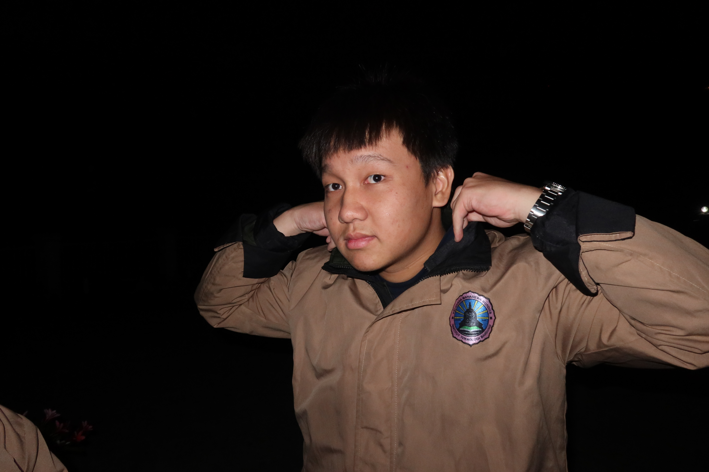

1 UTS-1 All About Me

Saya Filbert Engyo, mahasiswa tingkat 3 Teknik Informatika di Institut Teknologi Bandung.
Saat ini saya sedang mempersiapkan diri untuk berkarier di bidang Cyber Security, sebuah bidang yang menantang, berkembang pesat, dan memiliki kebutuhan talenta yang sangat tinggi.
Lahir di Jakarta pada 26 Juni 2005 sebagai anak pertama dari dua bersaudara, kini saya tinggal di Jatinangor untuk menempuh pendidikan dan membentuk masa depan saya dalam dunia teknologi.
2 1. Latar Belakang
Perjalanan pendidikan saya dimulai di TK dan SD yang berada dekat dengan tempat tinggal saya.
Saat kelas 6 SD, saya memutuskan untuk menempuh pendidikan di SMP Santa Maria Jakarta di Pecenongan, meskipun jauh dari rumah. Di masa SMP, saya mulai belajar banyak hal tentang kemampuan sosial, akademik, serta non-akademik. Untuk melatih kemampuan sosialisasi, saya bergabung dalam OSIS di divisi sosial.
Setelah SMP, saya melanjutkan pendidikan ke SMA Kolese Kanisius, sekolah yang terkenal menekankan kedisiplinan, kemampuan akademik, serta pengembangan karakter.
Di SMA inilah saya pertama kali mengenal Teknologi Informasi dan Komunikasi (TIK), yang kemudian menjadi turning point dan membawa saya ke dunia Informatika.
Keputusan untuk melanjutkan pendidikan di Institut Teknologi Bandung saya ambil karena reputasinya sebagai kampus teknik terbaik di Indonesia dan karena dorongan untuk mendalami Informatika secara lebih serius.
3 2. Bidang yang Saya Tekuni
Memasuki dunia Informatika membuat saya sadar bahwa bidang ini begitu luas dan tidak mungkin dikuasai seluruhnya.
Pada awal kuliah, saya mendengar bahwa jalur full-stack developer sudah sangat umum sehingga saya mulai mempertimbangkan bidang yang lebih spesifik dan jarang dikuasai, tetapi sangat dibutuhkan industri.
Dari riset dan pengamatan pasar kerja, saya menemukan bahwa Cyber Security adalah salah satu bidang dengan permintaan yang sangat tinggi namun minim tenaga ahli—khususnya di Indonesia.
Dengan motivasi tersebut, saya mulai belajar Cyber Security melalui:
- Kompetisi Capture The Flag (CTF)
- Eksplorasi network security
- Menulis script kecil, mempelajari cryptography, dan mencoba dasar-dasar binary exploitation
Meski menantang, saya menemukan bahwa mempelajari keamanan siber memberi rasa kepuasan tersendiri karena sifatnya yang problem-solving dan investigatif.
4 3. Keahlian Saya
4.1 3.1 Hard Skills
4.1.1 Cyber Security
- Network Security
- Pentesting Tools
- OSINT
- Cryptography
- PWN (Binary Exploitation)
4.1.2 Programming Languages
- Python
- C / C++
- JavaScript & TypeScript
- Go
- PHP
4.1.3 Tools & Technologies
- Linux
- Docker
- Git
- Wireshark (sedang dipelajari)
- Cisco Packet Tracer
4.2 3.2 Soft Skills
- Analytical Thinking
- Problem Solving
- Critical Thinking
- Communication
- Teamwork
- Leadership
- Time Management
- Curiosity
- Financial Analysis
5 4. Pengalaman & Proyek
Walaupun masih berada dalam tahap awal perjalanan karier, saya telah mengikuti beberapa pengalaman dan proyek seperti:
- Mengikuti lomba CTF
- Mengembangkan proyek komunikasi TCP over UDP
- Membuat aplikasi web dengan penerapan prinsip keamanan dasar
- Kolaborasi tim dengan GitHub, Docker, dan simulasi jaringan menggunakan Cisco Packet Tracer
Saya juga memiliki pengalaman organisasi sebagai Finance Associate di Inkubator IT, organisasi penyedia jasa pengembangan perangkat lunak.
6 5. Proyek Pribadi (Dalam Perencanaan)
Untuk mengembangkan portofolio dan memperkuat posisi saya di bidang Cyber Security, saya sedang merencanakan dua proyek berikut:
6.1 1. Mini Penetration Testing Lab (Local Cyber Range)
Membangun lab pentesting pribadi menggunakan Docker/virtual environment dengan beberapa vulnerable machines.
Proyek ini meliputi: - Setup environment
- Simulasi serangan
- Dokumentasi eksploitas
- Analisis mitigasi
6.2 2. Secure Web Development Project
Membangun aplikasi web kecil yang berfokus pada praktik secure coding, seperti: - Input sanitization
- Password hashing
- CSRF protection
- Rate limiting
- Audit keamanan
7 6. Nilai & Cara Kerja Saya
Saya memegang nilai: - Eksplorasi
- Disiplin
- Kolaborasi terkoordinasi
- Pantang menyerah
Dalam belajar dan memecahkan masalah, saya biasanya: - Melakukan riset mandiri
- Berdiskusi dengan teman atau orang yang lebih ahli
- Mencoba eksperimen berisiko rendah ketika semua opsi lain telah dicoba
Motivasi utama saya adalah: - Peluang karier yang luas
- Rasa takut untuk stagnan
- Keinginan untuk menjadi versi terbaik dari diri sendiri
8 7. Sisi Personal
Di luar akademik dan teknologi, saya memiliki hobi: - Bermain game
- Berolahraga
- Mempelajari finance
Fun fact tentang saya:
> Saya suka menganalisis hal-hal random di luar pemahaman saya, namun sering kali tidak saya dalami seluruhnya—sekadar mengikuti rasa penasaran.
9 Penutup
Perjalanan saya di bidang Cyber Security baru dimulai.
Dengan kombinasi rasa penasaran, motivasi untuk berkembang, dan komitmen terhadap pembelajaran jangka panjang, saya berharap dapat memberikan kontribusi nyata di dunia keamanan siber di masa depan.